Proyectos / Caso 03 · App + web · Proyecto conceptual
park planner
Diseñé una app y una web para que ciudadanos y planificadores decidan juntos no solo dónde hace falta un parque, sino qué tipo de parque necesita cada barrio.
Proyecto conceptual del Certificado Google UX, apoyado en mi formación como Magíster en Diseño Urbano.
Mi rol
Proyecto individual: investigación, arquitectura de información, design system, UI y pruebas
Alcance
App móvil para ciudadanos y planificadores + web técnica para planificadores
Duración
5 semanas
Herramientas
Figma, Adobe Suite
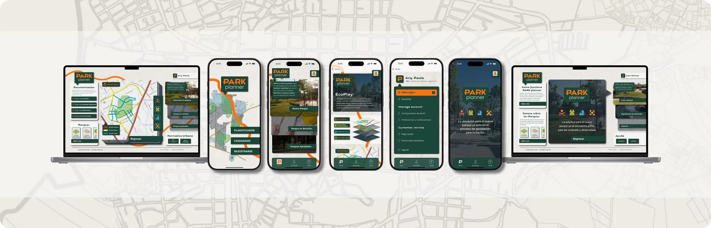
En este caso
00
resumen
desafío
Las ciudades detectan que falta un parque, pero no qué tipo se necesita ni para qué. Los planificadores trabajan con datos dispersos y los ciudadanos no tienen cómo proponer ni seguir una solicitud.
enfoque
Entrevisté a 2 expertos en urbanismo y 2 residentes, audité 6 herramientas, diseñé flujos diferenciados por rol y lo validé en dos rondas de pruebas.
resultado
Un prototipo hi-fi de app y web con mapa de capas urbanas, solicitudes ciudadanas con seguimiento, herramientas técnicas para planificadores y un design system compartido.
01
investigación
Contexto
No falta solo un parque: falta saber cuál.
Park Planner es una app y una web para que ciudadanos y planificadores decidan no solo dónde hace falta un parque, sino qué tipo de parque se necesita y para qué. Lo diseñé con lo que aprendí en mi maestría en diseño urbano.
En las entrevistas, los expertos contaron que trabajan con datos dispersos (densidad, movilidad, normativa) y que lo más demorado son las aprobaciones; los residentes, que no tienen cómo participar. La oportunidad: conectar lo técnico con lo comunitario en una sola herramienta.
El estudio en cifras
4
entrevistas: 2 expertos en urbanismo y 2 residentes
6
herramientas y referentes de planificación urbana auditados
2
perfiles con flujos propios: planificador y ciudadano
10/10
tareas completadas con facilidad por los planificadores
Métodos
Preguntas de investigación
Pregunta principal
¿Pueden los planificadores crear y evaluar un nuevo parque sin dificultades, y entienden los ciudadanos lo que se planea?
P1
¿Es intuitivo planificar?
Qué tan claro resulta crear un nuevo parque de principio a fin.
P2
¿Dónde se traban?
Los puntos del flujo y del mapa donde aparecen dudas.
P3
¿Sirven los informes?
Si la información que genera cada parque es clara y útil para aprobarlo.
P4
¿Alcanza para decidir?
Si los datos bastan para tomar decisiones estratégicas.
Lo que encontré en las entrevistas
Insight 01
Mismo objetivo, distintas necesidades
Ciudadanos y planificadores quieren transformar el entorno, pero acceden a información muy distinta.
Insight 02
Ciudadanos sin visibilidad
Procesos poco claros y sin forma de seguir el estado de sus solicitudes.
Insight 03
Planificadores con datos dispersos
Herramientas poco integradas dificultan decisiones sustentadas.
“Lo más difícil y demorado son las aprobaciones ante entidades públicas.”
Laura · Experta
“Una app no supera al diseñador en cómo concibe el territorio.”
Guillermo · Experto
“Cada uno tiene su punto de vista: se piensa en más cosas que lo que hará un alcalde o un arquitecto.”
Yamile · Residente
“Los que tienen hijos quieren un espacio, los deportistas otro: hay que tener en cuenta a todo el mundo.”
Libardo · Residente
Auditoría competitiva · 6 herramientas de planificación urbana
Analicé tres plataformas de análisis y diseño urbano y tres referentes de investigación y consultoría, evaluando primeras impresiones, interacción, diseño visual y contenido.
UrbanFootprint
Análisis geoespacial · directo
✓ Lo que hace bien
Grandes bases de datos y gráficos interactivos para decidir con información.
! Dónde se queda corto
Exige conocimientos avanzados, la suscripción es costosa y puede sentirse sobrecargado.
→ Lo que tomé
Datos urbanos reales, pero en capas simples de leer.
Urbanist.AI
Diseño urbano con IA · directo
✓ Lo que hace bien
Genera propuestas de diseño urbano rápido y adaptadas a cada contexto.
! Dónde se queda corto
Depende del algoritmo, sin ajuste manual, y no explica sus funciones a quien no es técnico.
→ Lo que tomé
Que el sistema proponga, pero el planificador decida.
ArkDesign.AI
Diseño generativo · directo
✓ Lo que hace bien
Simula escenarios en tiempo real con modelos 3D.
! Dónde se queda corto
No analiza a fondo el impacto social y exige capacitación previa.
→ Lo que tomé
Simular el impacto, también el social.
City Form Lab · MIT
Investigación académica · indirecto
✓ Lo que hace bien
Metodologías validadas e información extensa y bien organizada.
! Dónde se queda corto
Es un recurso de consulta, no una herramienta interactiva.
→ Lo que tomé
Rigor en los criterios de análisis.
Gehl Architects
Consultoría urbana · indirecto
✓ Lo que hace bien
Diseño del espacio público centrado en las personas, con casos bien documentados.
! Dónde se queda corto
Consultorías costosas y sin herramientas interactivas para planificar.
→ Lo que tomé
Poner a las personas en el centro del análisis.
Space Syntax
Análisis espacial · indirecto
✓ Lo que hace bien
Modelos avanzados de conectividad y movilidad, con datos presentados con claridad.
! Dónde se queda corto
Difícil de usar sin capacitación y poco adaptado al móvil.
→ Lo que tomé
La movilidad como una capa clave.
| UrbanFootprint | Urbanist.AI | ArkDesign.AI | City Form Lab | Gehl | Space Syntax | |
|---|---|---|---|---|---|---|
| Fácil para no especialistas | No | Parcial | No | Sí, para consulta | No aplica | No |
| Participación ciudadana | No | No | No | No | No | No |
| Simulación de escenarios | Sí | Sí | Sí, en tiempo real | No | No | Modelos de movilidad |
| Versión móvil | Aceptable | Deficiente | Regular | Deficiente | Aceptable | Deficiente |
La oportunidad
Ninguna es accesible para quien no es especialista ni abre la puerta a la participación ciudadana. Park Planner une ambos mundos en una sola herramienta.
Puntos de dolor
El proceso para proponer un parque no es claro.
Los planificadores consultan varias plataformas para obtener datos.
No hay herramientas que articulen propuestas ciudadanas y procesos técnicos.
No hay orientación sobre qué parque conviene según el contexto.
No se puede ver el estado de las solicitudes.
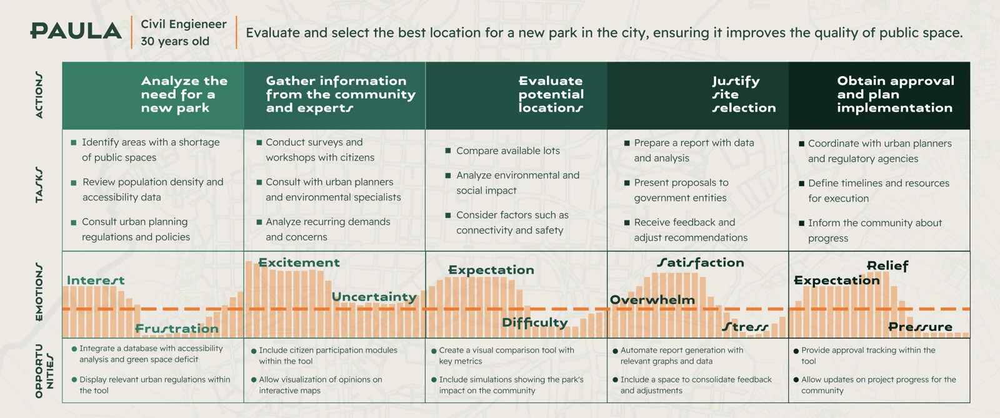
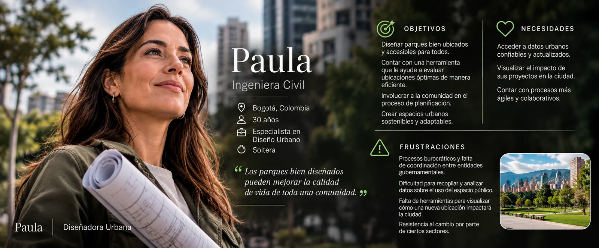
↻ Toca la ficha para ver la otra cara
Persona
Paula (Planificadora)
Paula, planificadora urbana de 30 años en una entidad pública, necesita evaluar el territorio con eficiencia.
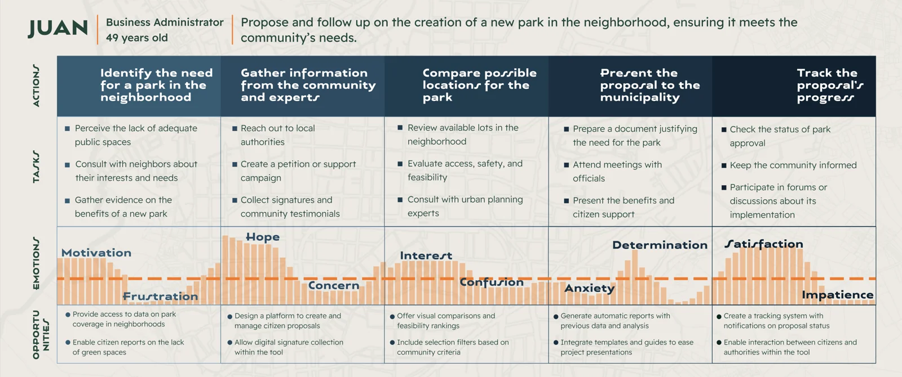
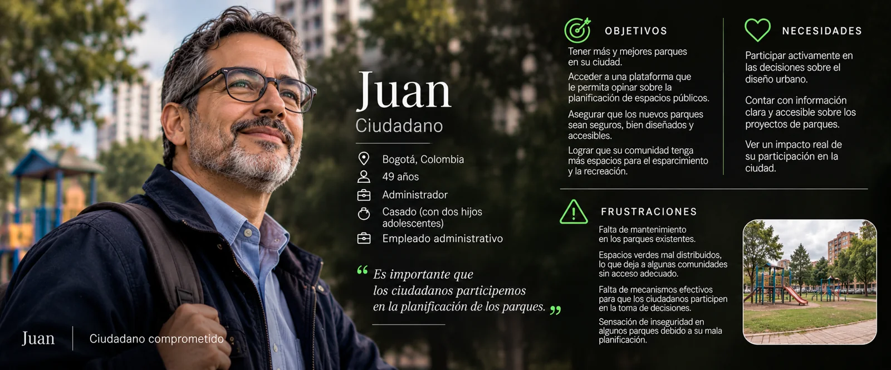
↻ Toca la ficha para ver la otra cara
Persona
Juan (Ciudadano)
Juan, ciudadano de 49 años, quiere proponer parques para su barrio y saber cómo avanza su solicitud.
Objetivos de diseño
Objetivo principal
Facilitar una planificación de parques más inclusiva y contextual: unir criterios ciudadanos y técnicos, y aprovechar datos abiertos para decidir qué parque necesita cada lugar.
01
Decidir con datos
Densidad, movilidad, uso del suelo y normativa en un solo mapa por capas.
02
Participar con claridad
Que el ciudadano proponga un parque y siga el estado de su solicitud.
03
Definir el tipo de parque
Orientar según la escala y el contexto, no solo según la ubicación.
02
estrategia y decisiones
Estrategia
Conectar lo técnico con lo comunitario: que el planificador decida con datos y normativa en un solo flujo, y que el ciudadano proponga y siga su solicitud con lenguaje sencillo.
01
Enfoque en el objetivo
Cada pantalla gira alrededor de una acción principal: planificar, proponer o revisar un parque.
02
Navegación guiada
Pasos visibles y retroalimentación inmediata para que nadie se pierda en una secuencia técnica.
03
Accesible para todos
Etiquetas alternativas en mapas e íconos, contraste alto y un lenguaje que no exige ser experto.
Punto de dolor
Cómo lo resolví
Información · los planificadores consultan varias plataformas.
Un solo mapa por capas: densidad, movilidad, uso del suelo y normativa.
Desconexión · ciudadanos y técnicos no se hablan.
Una plataforma con un flujo propio para cada rol.
Definir · nada orienta qué parque conviene en cada contexto.
Tipologías de parque según la escala urbana: local, zonal o metropolitano.
Trazabilidad · el ciudadano no sabe en qué va su solicitud.
Seguimiento del estado de cada solicitud en Parques en revisión.
Decisiones clave
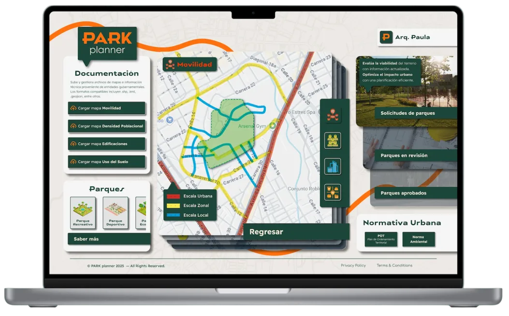
Decisión 01
App para proponer, web para analizar
Por qué
El ciudadano propone desde la calle y el planificador trabaja con archivos, mapas y normativa en un escritorio. Por eso la app sirve a los dos perfiles y la web concentra las tareas técnicas, que no caben bien en una pantalla pequeña.
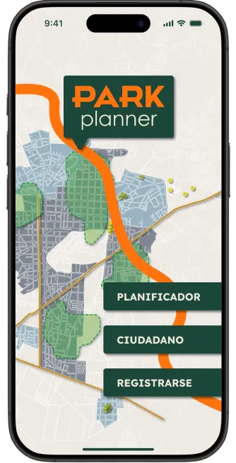
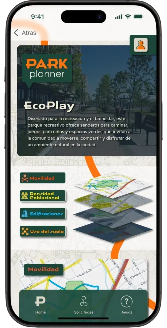
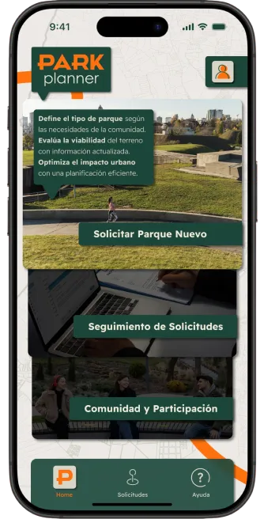
Decisión 02
Un flujo distinto para cada rol
Por qué
Al ciudadano lo guío paso a paso y con lenguaje sencillo. Al planificador le doy control: tipologías según la escala urbana (metropolitano, urbano, vecinal, de bolsillo), normativa, capas e informe automático; esa lógica viene de mi formación en diseño urbano.
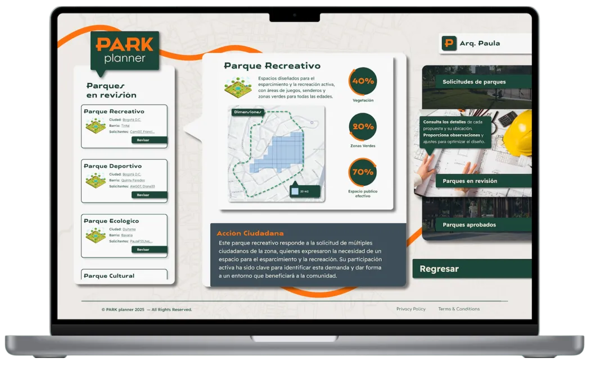
Decisión 03
El mapa por capas como metáfora
Por qué
Usé la lógica de los planos técnicos: capas de densidad, uso del suelo y cobertura verde que se superponen, con transiciones que simulan el cambio de plano.
Decisión 04
Design system desde lo-fi
Por qué
Consolidé tipografía, color y componentes temprano; así la web nació coherente con la app incluso en baja fidelidad.
03
validación
Presenté el diseño en dos rondas, primero en baja y luego en alta fidelidad, y documenté una prueba de usabilidad con 2 planificadores que recorrieron 10 tareas: crear un parque, revisar su informe, ir al perfil, consultar Parques en revisión y usar el mapa interactivo.
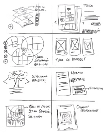
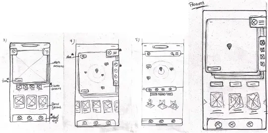
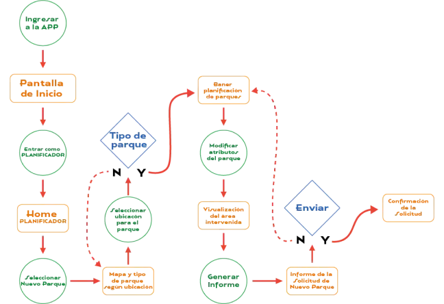
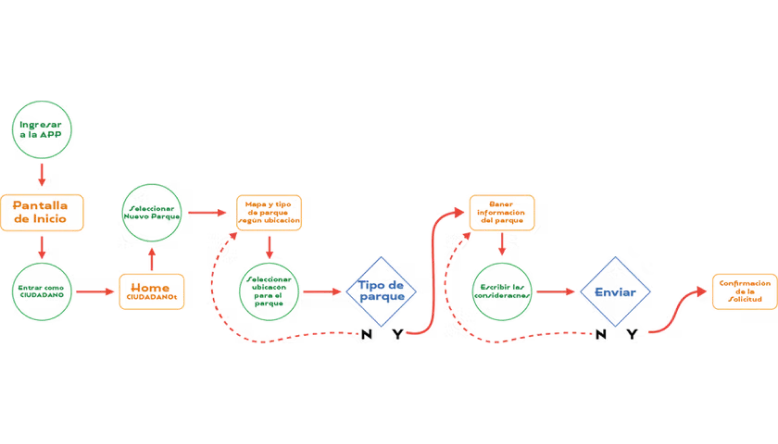
Lo que observé en la prueba · Mapa de afinidad
Uso y navegación
“Creo que al ser claro gráficamente se entiende bien la plataforma.”
“La plataforma es bastante sencilla, ahorra tiempo.”
Información
“Hace falta una capa que sea la normativa de ese parque (zonal, local, metropolitano).”
“Me parece buenísimo toda la información que te arroja el informe.”
Análisis de datos
“Es mejor que la información sea independiente, ya que después se vuelve un desorden.”
“Me gusta el manejo de porcentajes (vegetación, espacio público efectivo).”
Mejoras
Pidieron una línea de tiempo en Parques en revisión.
Sugirieron indicar el tipo de intervención y la razón social del parque.
Conclusiones de la prueba
10 de 10
tareas calificadas como fáciles por los dos planificadores.
→ El flujo lineal funciona y se mantiene.
2 de 2
pidieron más claridad sobre la normativa del parque.
→ Agregar una capa de normativa (P0).
1 de 2
se confundió con capas aún no implementadas, como el POT.
→ Mostrar solo lo que ya funciona (P0).
Qué cambió en cada ronda
Ronda 1 · Prototipo lo-fi
Hallazgo
Cambio en el diseño
Los planificadores se perdían en la secuencia técnica.
Mostré los pasos de forma visual: ubicación, tipología, normativa, modelado e informe.
No había confirmación al enviar o avanzar.
Agregué mensajes y cambios visuales al completar cada acción.
Los ciudadanos no entendían algunos términos urbanos.
Simplifiqué el lenguaje del flujo ciudadano.
Ronda 2 · Prototipo hi-fi
Hallazgo
Cambio en el diseño
Los íconos de las capas no eran claros.
Rediseñé los íconos y agregué una leyenda expandible.
Querían estimar el impacto de un parque.
Diseñé una simulación de impacto: afluencia, vegetación y servicios.
Pedían adaptar la herramienta a contextos rurales y urbanos.
Agregué la personalización por tipo de contexto.
04
solución
01
Navegación clara por rol
En la app y en la web, la navegación cambia según el perfil y prioriza lo importante: crear una solicitud, explorar tipologías de parque o consultar su estado.
02
Mapa con capas urbanas
El mapa de la ciudad es el centro de la experiencia: superpones capas de densidad, accesibilidad o cobertura verde para ubicar y justificar cada parque.
03
Flujos diferenciados por rol
Al ciudadano lo guío con un flujo directo y lenguaje sencillo; al planificador le doy control total sobre los datos, filtros avanzados y carga de documentos técnicos.
04
Responsive y escalable
La app sirve para proponer desde la calle y la web para el trabajo técnico en equipo. Ambas comparten la misma estética de planos y capas.
05
Interacciones funcionales
Microinteracciones que simulan el cambio de plano: confirman cada avance y ayudan a ubicarse, sin sacrificar la accesibilidad.
06
Simulación de impacto
Antes de proponer un parque, estimas su impacto en afluencia, vegetación y servicios. La sumé después de la ronda 2, a pedido de los planificadores.
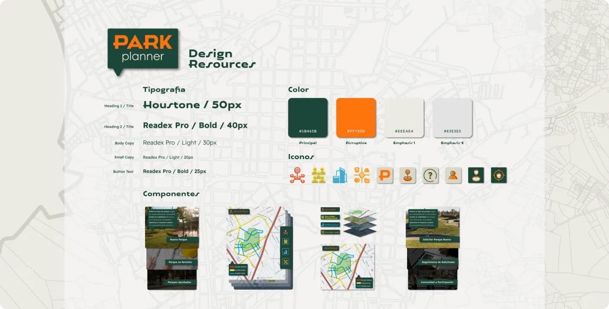
Design system
Guía de estilo
Me inspiré en los planos técnicos: verde oscuro (#1B463B) para títulos y acciones, naranja (#FF720D) para acentos y un fondo neutro con el mapa de Duitama. Houstone Expanded en títulos, Reader Pro en textos e íconos de línea como trazos de un plano.
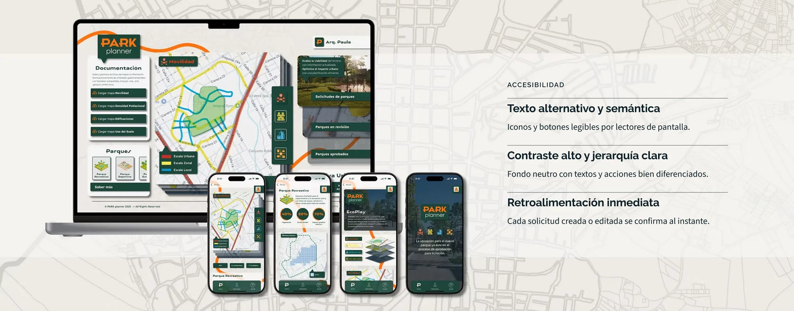
Accesibilidad
- Texto alternativo y semántica: Iconos y botones legibles por lectores de pantalla.
- Contraste alto y jerarquía clara: Fondo neutro con textos y acciones bien diferenciados.
- Retroalimentación inmediata: Cada solicitud creada o editada se confirma al instante.
05
resultados
Qué cambió
✓ Los planificadores valoraron tener los datos urbanos superpuestos en un solo flujo.
✓ Los ciudadanos pueden proponer un parque y seguir el estado de su solicitud.
✓ El design system compartido mantuvo coherentes la app y la web.
Voz de los usuarios
“Nunca había podido participar en el diseño de un parque como ciudadana. Ver cómo mi solicitud se construye desde mapas reales es muy motivador.”
“Como planificador, poder tener toda la información en un solo flujo técnico y visual me ahorra muchísimo tiempo. Todo tiene lógica y está bien estructurado.”
Cómo lo mediría
→ Tiempo para completar la planificación de un parque
→ Tasa de errores y de abandono en el flujo
→ Satisfacción tras el uso, medida con SUS
→ Solicitudes ciudadanas completas y bien justificadas
Qué aprendí
Aprendí a equilibrar dos perfiles opuestos sin perder claridad ni profundidad, y que mi formación en diseño urbano era una ventaja: entender el POT y las tipologías me permitió hablar el idioma del planificador. Una herramienta pública exige transparencia: el ciudadano necesita ver qué pasa con su propuesta.
Próximos pasos
Evaluación automática de solicitudes
Analizar cada solicitud con densidad, cobertura vegetal, equipamientos y POT para priorizar proyectos.
Probar con tomadores de decisión
Una ronda con usuarios institucionales para entender sus barreras al procesar solicitudes.
Integrar plataformas oficiales
Conectar con catastro, IDE locales y seguimiento de obras públicas.
Dashboards para planificadores
Patrones de solicitud e indicadores urbanos para decidir a nivel de ciudad.